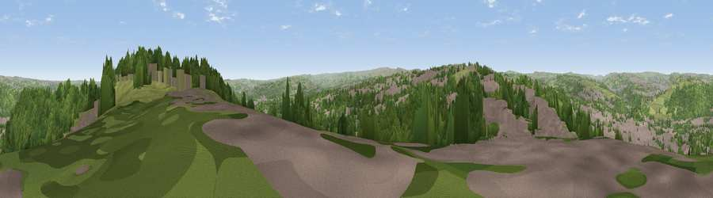

Viewpoint near Ainley Top
#11873 in England · top 14% of its area beats it · near Ainley Top · access?Where it is
The exact computed spot (SE 11775 19625). Click the marker for map links.
Public access: no public right of way or access land is recorded at this exact spot — it may be on private land. Computed from Natural England's CRoW access layer and OpenStreetMap rights of way — not the legal definitive map. Always verify locally.
The view, rendered

A 360° render of this exact spot computed from the terrain model, tree cover and land cover — summer colours, afternoon light, calibrated against photographs of famous viewpoints. Real trees, hedges and buildings will differ in detail.
The panorama
Grey silhouette: terrain skyline in each direction (720 bearings, Earth curvature and refraction included). Dashed green: skyline with trees (+15 m) and buildings (+8 m) as obstacles. Blue strip: how far the ground is visible on each bearing.
Where the view opens
Wedge length = distance to the farthest visible ground on that bearing (vegetation-aware). Rings at 10, 25 and 50 km.
What fills the view
39% woodland · 35% built-up · 26% grassland
Angular shares of the visible panorama (visual magnitude), not map area. Landscape diversity 0.48 (0–1 Shannon).
Key numbers
More beautiful places nearby
The staircase of upgrades: each row has a higher view potential than everything closer. Driving times are estimates from straight-line distance, calibrated against real road routing — check an actual route before setting out.
| Place | Direction | Drive | Score |
|---|---|---|---|
| Fixby Ridge | ENE · 1 km | ~2 min | 65.7 |
| Wholestone Moor | SW · 5 km | ~11 min | 66.4 |
| Castle Hill | SSE · 7 km | ~14 min | 70.2 |
| Viewpoint near Stump Cross | NNW · 9 km | ~17 min | 71.5 |
| Viewpoint near Jackson Bridge | SSE · 14 km | ~25 min | 73.5 |
| Viewpoint near Greenfield | SW · 20 km | ~34 min | 76.0 |
| Viewpoint near Carrbrook | SSW · 23 km | ~38 min | 77.1 |
| Viewpoint near Otley | NNE · 26 km | ~42 min | 77.5 |
53.67297, -1.82324 · source: screening · position refined by local search. Computed location — check access rights before visiting.